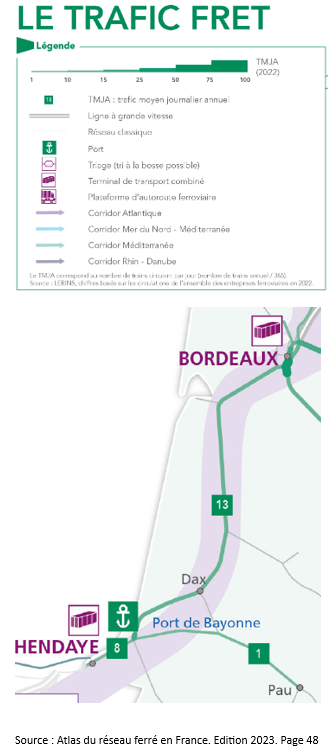

Y aura-t-il moins de camions et plus de fret ferroviaire ?
Ce qu'ils disent :
« Sur la ligne existante circulent aujourd’hui au maximum 109 trains, dont 10 à 18 trains de fret ferroviaire pour le transport de marchandises. Le pic de circulation se situe au sud de Bordeaux.
En aménageant la ligne existante, on ne pourra faire passer qu’au maximum 50 trains de fret (dans les 2 sens) entre Bordeaux et la bifurcation de Lamothe (dans les Landes), alors qu’on pourra faire passer 80 à 85 trains de fret si on réalise la ligne nouvelle Bordeaux-Dax.
La création de la ligne à grande vitesse vers l’Espagne permettra de dégager de la capacité pour passer la part du fret ferroviaire de 3 à 18 %.»
Vérifions les faits.
Ceci est inexact. Sur la ligne existante Bordeaux-Espagne circulent aujourd'hui 100 trains (50 par sens), dont 14 trains pour le transport de marchandises. (Source : Atlas du réseau ferré en France Edition 2023. SNCF Réseau, pages 42 et suivantes).
Il circule 100 trains en sortie de Bordeaux, point le plus contraint, soit 50 trains par sens environ. Rappelons qu’en sortie de Bordeaux, la capacité de la ligne est de 264 trains/jour (132 trains par sens)
164 sillons sont disponibles (82 par sens).
La ligne existante offre une capacité suffisante quoiqu’il en déplaise aux promoteurs du GPSO.
La part du fret ferroviaire peut passer de 3 à 18% sur la ligne existante.
Aucun de ces problèmes n’est à ce jour résolu.
Pour approfondir la question.
SNCF Réseau a publié la circulation fret pour 2022, le trafic fret en sortie de Bordeaux est de 13 trains (6,5 par sens) et à 8 trains entre Bayonne et Hendaye (4 par sens).
